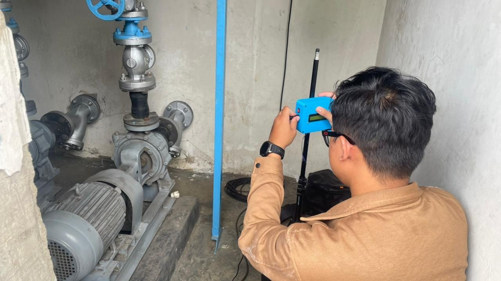
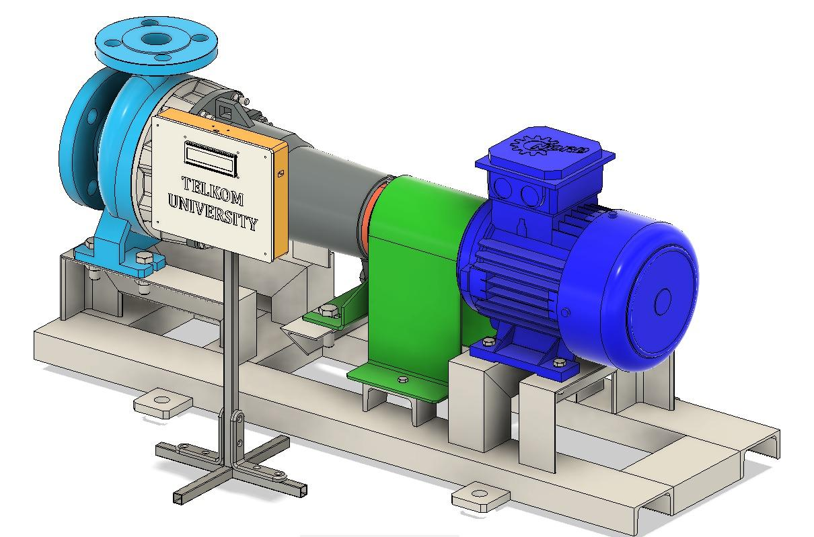
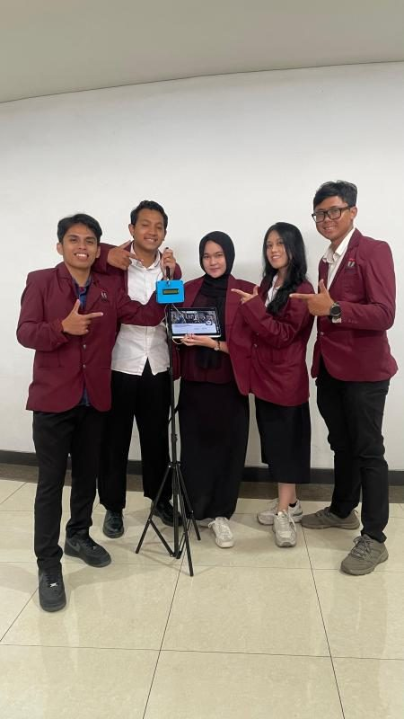

Project · Equipment Monitoring
Pump RPM Monitoring — Equipment Condition Monitoring



About the project
This project developed a Condition-Based Monitoring (CBM) system for centrifugal pumps in a water distribution system. It focuses on monitoring pump rotational speed (RPM) to detect early signs of bearing degradation and mechanical anomalies, helping shift maintenance from a fixed schedule to one driven by the pump's actual condition.
What I did
- Contributed to TCRT5000 optical-sensor integration for centrifugal-pump RPM monitoring, working in a team of 5; sent readings to Firebase every few seconds and created a live display in Kodular.
- The team installed and tested the system at Telkom University dormitory pump facilities to collect operating data for equipment-condition evaluation.
- Contributed to machine-learning data processing.
Approach: rule-based logic and machine learning
The system reads RPM data from a dedicated sensor unit, processed with Python. Anomaly detection combines a rule-based algorithm (flagging RPM readings outside expected operating thresholds) with a scikit-learn machine learning model to recognize subtler mechanical anomaly patterns that fixed rules alone might miss.